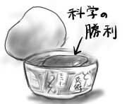
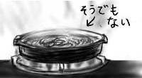
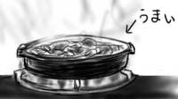
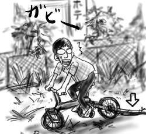
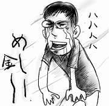

大便が止まらなくて便所で難儀している夢を見続けたせいであやうく会社に遅刻するとこでした。大丈夫か！(脳)。こういった類の夢は、止まらないとトイレから出られない=夢から覚めない、みたいなことになっているっぽい。なんとかしたい。
iPod用のケースというのが結構あちこちから発売されていて、レビューを目にする機会も多いのですが、なにゆえちょっと良い物になると革製になってしまうのだろう。革製品は、使えば使うほど味わいが出てくるなんて言われるけれども、僕にとっては単に汚くなっていくようにしか見えない。
思えば小学生時代、親がガッツを入れて買って来た牛革製ランドセルを使っていて、他の児童の合成革ランドセルと製品名が違うために仲間外れにされがちだったことに加え、合成革ランドセルはいつまでたってもテカテカ、ツルツルなのに、僕のランドセルだけが無惨にもどんどんと色あせていった、というのがトラウマとしてあるのかもしれません。ベルトだって本革製の方が先にへたってちぎれてしまうし、財布だってそうだ。いつだって合成が最高。
即席カップうどんのおあげが本物のおあげより美味しいのと同じく、科学が自然を凌駕した素晴らしい例の一つだと思います。

僕の晩飯の話です。
NHKの「ミュージックカクテル」にスケッチショウ(= 細野晴臣&高橋幸宏)が出ていたので、ぼんやりと視聴。音楽の方は予想の範囲を逸脱してなくてやや物足りない感じだったので、むしろVJとしてSILICOMの高木正勝が映像を提供していたことの方が驚きでした。
冷凍うどんは、最も手軽に本格うどんを楽しめるイカしたプロダクツなのですが、冷凍ラーメンは実はそうではない。ということに気付きました。

僕の晩飯の話です。
雨の中、いつものメンバで馬肉を食べに出かけました。小生、馬肉は初めてゞあります。
「みの家」という明治時代から続く老舗だそうで、店舗は一軒家の日本家屋。座敷を上がると奥行きのある畳間になっており、古い木造建築の匂いがします。この匂いを嗅ぐとついつい祖父の家を思い出してしまう。こういうのも久しぶりでいい感じ。
馬刺！馬肉のたたき！桜鍋！(注文)
馬の肉はなんとなく硬いというイメージがあったのですが、とても柔らかくて癖がなく、淡白な味わいなので、つるつると食べられます。考えてみれば、硬いというのは筋肉質っぽいというところからの連想で、それってサラブレッドとかじゃないか。食肉用の馬というのが容易に想像できません。それなりにデブいのかしら(?)

メインの桜鍋を平らげて時計を見ると、まだ入店して30分しか経っていませんでした。速攻屠殺です。アチョー！
アチョー！という怪鳥音も、旧仮名遣いでは「あてふ」なのか、どうなのか？(雑念)。
その後、店を移してだらだらと飲み。「会社とかで飲み会があると、家に帰って同じくらいの時間を一人で引きこもって過ごさないとバランスがとれないよね？」という主張については全く同意が得られなかったばかりか、そもそもそれは天秤の両端に乗せて比べられるものなのか？と問われ、激しく動揺。そんなこと考えてたのは僕だけだったのですか！
相当にショックでした。
第３回日本SF新人賞受賞作であるところの井上剛『マーブル騒動記』(徳間書店)を読み始めました。応募時のタイトルは『さらば牛肉』だったらしいのですが、例の騒動でタイトル変更になったとか。オリジナルタイトルの方がイカしてると思います。先入観では「ネズミが牛になったアルジャーノン」だと思っているのですが、果たして(絶対違う)。
BookOffで、Robin Williams著・吉川典秀訳「The Non-Designer's Design Book」(毎日コミュニケーションズ)を300円で購入。今さらいらない気もするけど、この値段なら手もとに置いておいてもよいかと思います。
中古で買ったCDは全て外れだったので、目の届かないところへ隠しました。
部屋を片付けていると、先週あたりにポストに紛れ込んでいた某大型電器店の開店セール広告を見つけました。その某大型電器店は、家の近所から広告にある店舗へ移転してしまったのです。何もせずに家でゴロゴロしているよりはよいだろうと、ちらしの「4km先に移転オープン」を信じて自転車で遠出してみることにしたのでした。
それにしても、僕がこちらに越して来てから、本屋、コンビニに続いて電器屋まで、便利ショップは僕の周辺から次々と逃げ出していきます。そんなに俺が悪いのか(チェックの服を着込みながら)。
移転先の店舗は国道沿いにあるようなので、脇の歩道を走っていたのですが、今さらながら国道の「車が走ることしか考えてないっぷり」に閉口。いきなり高架下へ下ろされたかと思うと水たまりだらけの空き地を通過させられたり、いきなり脇へそれたかと思うと雑木と雑草が生い茂る細道を経由させられたりします。細道では、とても久しぶりに濡れた土と植物の匂いを嗅ぎました。しかし風流とかリラックスとかからはほど遠く、横をドブ川が流れ、樹木の切れ間からはラブホテル街がのぞいています。そもそもここの植物は排気ガスをガンガンに浴びて育っているわけで全く油断なりません。
そんな波瀾万丈コースを走行中、後輪にいやな感覚があり、その後漕いでも漕いでも前に進めなくなりました。見るとものすごい勢いで蔦がギアに絡み付いています。手で引きちぎろうと引っ張ってみたのですが、びくともしないどころか逆にギアにめり込んで行きます。いくらなんでも丈夫すぎだ！
頭の中でチャーリー・コーセーの「ルパン三世その２」が鳴り響く中、手を油でベトベトにしながら足下に絡み付く蔦をパージ。これは、排気ガスで目覚めたみどりの守り神でしょうか。「あ、鳥が！」(エンディング)

4kmというにはあまりの大冒険の末にたどりついた某大型電器店の新店舗。確かに大きくてフロアも広そうです。さっそく入店。そして気付きました。１階はこれ、スーパーマーケットじゃねぇか！キャベツや人参を入れたカゴを持って人がウロついています。
結局、電器店は１フロアのみで、品揃えも移転前より多少充実した程度でたいして変わってません。置いてあるパソコンもほとんどがVAIO。こんなことなら移転しないでいただきたい(帽子を地面に叩き付けながら)。
帰りは国道はもういやだということで、適当に違う道を走ってたら一瞬で家の近くに到達。ワープと呼んでいきたい。
お金を下ろせたよ。いろいろ買えるって便利！
さっそくコンビニに出向き、4年ぶりくらいにハイチュウを買う(なぜ)。「ジューシー度アップ」って書いてたけど、ベタつき度が上がってたよ。
昼間に飲み物を買ったので今日は財布に21円しかありません。
考えてみれば、最近はセブンイレブンで24時間お金がダウンロードできるのでした。しかし郊外の夜をなめてはいけません。セブンイレブン近くに改造車で乗り付けたヤングウルフ達が、コンビニ前にケツを貼付けてだべっている女狐(髪が狐色だから)を狩猟の餌食(not 死霊のえじき)にしようとブンブン唸り声を上げてうろついているのです。
そんな危険濃度がバカ高な狩猟地帯に、僕みたいな人間が朴訥とした農耕民族面をぶらさげてプラプラ出て行ったりしたら！あまつさえ現金を引き出しているところなんて見られたりした日には！すぐさま捕まって素っ裸にひんむかれてしまうでしょう。女狐もカツ(揚げ)も衣が黄金色という点では一緒だからです。おお、怖い。
そんなわけで帰宅が遅い昨今、わざわざ普段使っている安全なコンビニをスルーして、危険地帯まっただ中のセブンイレブンまで足を伸ばすのは命がいくらあっても足りません。
失意にくれて帰宅し、水屋を開けてみると春先に買ったインスタントラーメン(袋)が放り込まれていました。これだ！
水屋は未来の自分へのプレゼントを(以下略)。

いい加減こんなモグラ叩きみたいな食生活とはおさらばしたいものです(早起きして下ろせ)。
ねるとんテロゲリラ団！(挨拶)
9.11は世界的に忘れられない数字になったようですが、僕の財布には191円しか入っていません(関係ない)。晩飯には、一昨年くらいに買った森永のホットケーキの素(賞味期限が2002.10)でも開封し、かわいく焼いてみようかと思ったのですが、これではコンビニで牛乳が買えません。
買ってから2年間も食べられなかった不思議のホットケーキですが、ここまで放置していたものを突然思い出したこともまた不思議です。賞味期限が迫ると何か「食べて電波」みたいなものを出すとしか考えられません。
しかし、その「食べて電波」も財布には届かなかったようです。
失意にくれて帰宅し、冷凍庫を開けてみると夏前に買った冷凍餃子が鎮座していました。これだ！
冷凍庫は未来の自分へのプレゼントを入れておくのに最適だと思いました。